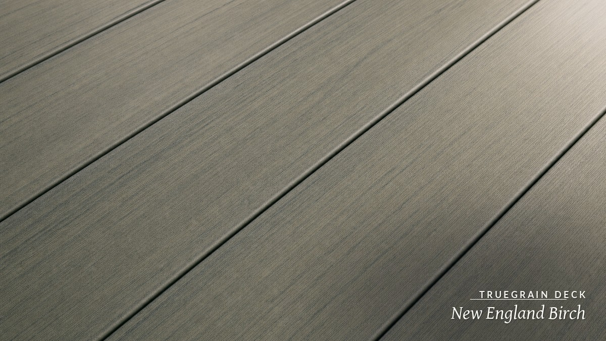

The most realistic
wood-look PVC decking.
Want a deck that reads like real hardwood but never needs sanding, staining, or sealing? The secret is a laminated, photoreal wood grain, not a stamped texture, over a cellular PVC core. Here's what makes wood-look PVC decking actually look real.
The most realistic wood-look PVC decking uses a laminated, photoreal wood-grain surface rather than an embossed texture. A printed, variegated decor layer gives the grain, pores, and tone the variation of real hardwood, with edge-to-edge registration, so it reads as wood both from standing height and up close.
TrueGrain Deck laminates that grain over a weatherable ASA cap and a moisture-resistant cellular PVC core, in six hardwood-inspired colors including deep mahogany Royal IPE. Made in the USA, backed by a 25-year limited residential warranty.
Laminated grain vs
the alternatives.
Short answer: a laminated wood grain gives the most realistic look while keeping the moisture and heat advantages of cellular PVC.
| What matters | TrueGrain PVC | Capped Composite | Traditional Wood | Other Premium PVC |
|---|---|---|---|---|
| Warranty | 25-yr limited residential surface, 10-yr commercial | Long limited terms; fade coverage varies widely | None beyond lumber grade | Comparable long limited warranties |
| Material composition | Cellular PVC core, ASA cap, laminated grain, no wood fiber | Wood-fiber core under a polymer cap | Solid natural wood | Cellular or solid PVC, no wood fiber |
| Heat resistance | Cool-deck formulation, cooler than dark composite | Can run hot in dark colors and direct sun | Moderate, but greys and slick when wet | Generally cooler than composite; varies by cap |
| Surface texture | Laminated photoreal grain, variegated, reads like wood | Embossed grain, repeating pattern | Real grain, unmatched but splinters | Embossed or printed grain, realism varies |
| Price tier | Premium | Mid to premium | Low to high, by species | Premium |
| Maintenance | Soap & water, never sand, stain, or seal | Occasional cleaning; can stain or fade early | Sand, stain, seal, or oil regularly | Soap & water |
Why laminated grain
reads like real wood.
Short answer: variation. Real wood is never the same twice, and a printed decor layer can reproduce that where an embossed stamp cannot.
Laminated, printed grain vs embossed texture
Embossed decking presses a repeating pattern into the surface, so the same texture recurs board to board and can look manufactured up close. Laminated woodgrain prints a high-resolution, variegated decor layer where grain, pores, and tone vary the way they do in hardwood, with edge-to-edge registration on every board.
Verdict: variation and registration are what sell the wood look.
Color depth that holds
The printed grain sits under a UV-stabilizing layer and a weatherable ASA cap, so the tonal depth of real hardwood is protected against fade. That is what lets a wood-look PVC board keep looking like wood for decades instead of chalking or washing out.
Verdict: protected print equals a wood look that lasts.
Related reading: the ipe wood alternative, the cellular PVC decking guide, or PVC vs composite decking.
Wood to touch,
PVC to last.
Short answer: TrueGrain was built for the shopper who wants a real hardwood look without the sander and the stain can.
Six hardwood-inspired colors
New England Birch (weathered silver-grey), Coastal Driftwood (soft warm grey), Aged Oak (golden tan, open grain), Embered Taupe (warm smoky brown), Royal IPE (deep mahogany amber), and Tropical Walnut (dark walnut grain). Each uses a variegated laminated grain, so no two boards look stamped from the same die.
A palette that mirrors real hardwood species.
Realism on a board that won't quit
Under the grain is a cellular PVC core with no wood fiber, capped four sides, cool underfoot, and grooved-profile ready for the InvisiClip hidden fastener system so no screws interrupt the surface. Prefer a solid-color classic instead? Legacy PVC Decking shares the same core with a subtle grain texture. Both are made by Patwin Plastics in Linden, NJ.
The look of wood, the durability of cellular PVC.
Judge the realism in your own light.
Photos only go so far. Order free 6-inch samples to read the grain up close, or preview every color on a photo of your deck in the 3D Deck Builder.
Realistic
wood-look PVC.
The questions wood-look shoppers ask most about realism and upkeep.
What is the most realistic wood-look PVC decking?
The most realistic wood-look PVC decking uses a laminated, photoreal wood-grain surface rather than a stamped or embossed texture. TrueGrain Deck laminates a high-resolution, variegated hardwood grain over a weatherable ASA cap and a cellular PVC core, so the grain reads across the whole board with the tonal depth of real hardwood, in six hardwood-inspired colors.
What makes laminated woodgrain decking look more real than embossed decking?
Embossed decking presses a repeating grain pattern into the surface, so the same texture repeats board to board and can look manufactured up close. Laminated woodgrain uses a printed, variegated decor layer where the grain, pores, and tone vary the way they do in real hardwood, with edge-to-edge registration. That variation is what reads as real wood from standing height and up close.
Does wood-look PVC decking fade over time?
Quality wood-look PVC protects the printed grain with a UV-stabilizing layer and a weatherable ASA cap. TrueGrain Deck carries a 25-year limited residential warranty against abnormal color change beyond 2 Delta E and against cracking, full coverage in years 1 through 5 and prorated thereafter, so the wood look is engineered to hold for decades.
Can PVC decking really look like real hardwood?
Yes. A laminated wood-grain PVC board can closely mirror premium hardwood, including deep tones like Brazilian ipe. TrueGrain's Royal IPE color reproduces a deep mahogany-amber hardwood look, while the board underneath is moisture-resistant cellular PVC that won't splinter, rot, or grey out. Ordering a free sample is the best way to judge the realism in your own light.
Is wood-look PVC decking low maintenance?
Yes. Because the realistic look comes from a laminated surface over cellular PVC rather than from real wood, it needs only soap-and-water cleaning. It never requires the sanding, staining, or sealing that natural wood needs to keep its color, and it won't splinter or rot.